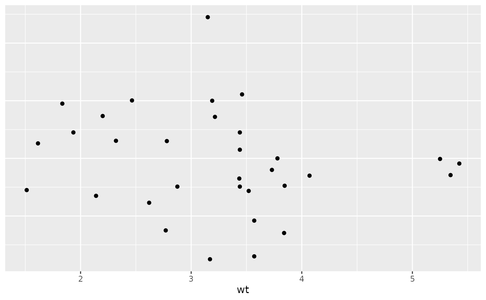

R/ggplot-helper.R
theme_no_axes.Rd
Remove axis elements
theme_no_axes( axes = "xy", text = TRUE, ticks = TRUE, title = TRUE, line = FALSE )
Which axes elements should be removed? A string containing one or more of "t", "l", "b", "r", "x", and "y".
"t"
"l"
"b"
"r"
"x"
"y"
If TRUE, will remove the axis labels.
TRUE
If TRUE, will remove the axis ticks.
If TRUE, will remove the axis title.
If TRUE, will remove the axis line.
A theme() object.
theme()
p <- ggplot() + geom_point(aes(x = wt, y = qsec), data = mtcars) p + theme_no_axes() p + theme_no_axes("b") p + theme_no_axes("l") 